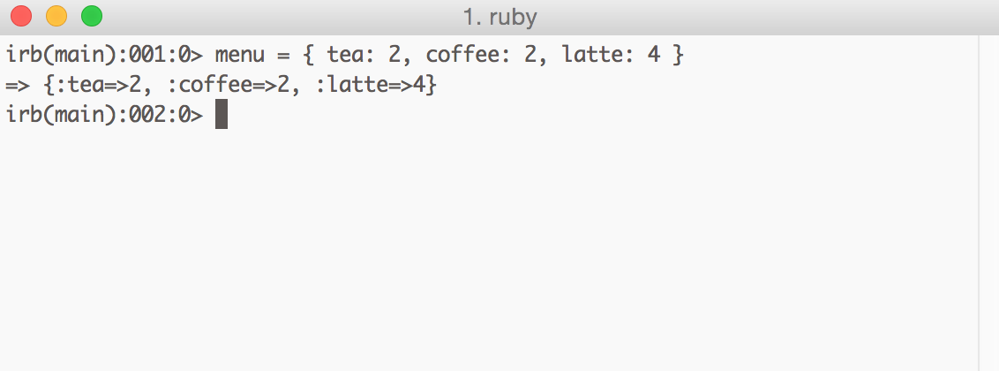
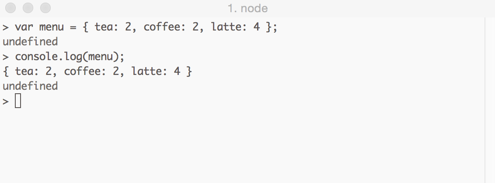
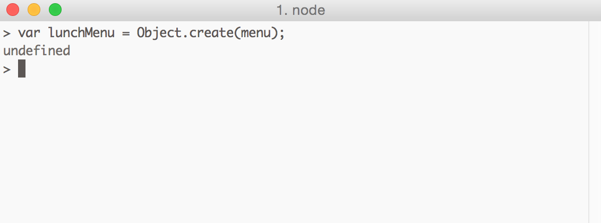
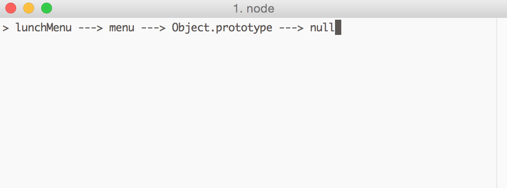
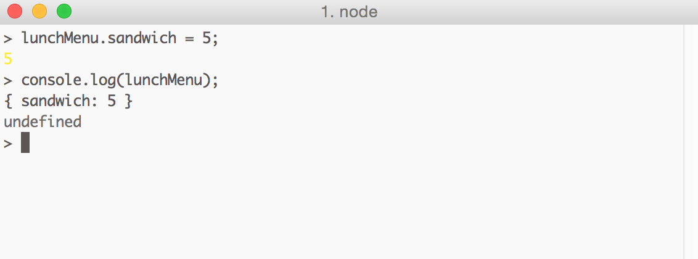
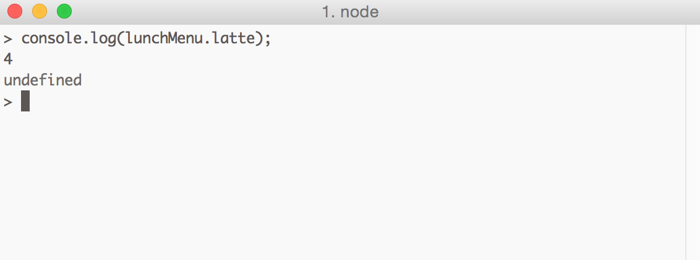

Ruby Hash vs JavaScript Object
This week we switched our studies from Ruby to Javascript so after a week of exposure I wanted to reflect back on some of the differences between the two languages starting with JavaScript objects.
A JavaScript object is an unordered collection of properties, each with a key and a value. This sounds very similar to the Ruby hash and for the most part it is.
Ruby Hash

JavaScript Object

Other than a few differences in syntax, the code above is the same.
JavaScript objects are more than just associative arrays. A JS object can inherit properties from another object, referred to as its "prototype". Class based languages like Ruby also have inheritance but since JavaScript doesn't have classes, inheritance is accomplished through objects exclusively.
When we created our menu object its prototype by default was Object.prototype. Here's the inheritance chain for our menu object:

Let's create another object and set menu as its prototype:

We've created a lunchMenu object and set its prototype equal to menu. Its prototype chain is:

Let's add a property to the lunchMenuobject and use console.log to display our object:

Nothing too surprising here, the lunchMenu object contains the property we added.
lunchMenu inherits from menu so we can also access inherited properties

The returns is 4 even though lunchMenu doesn't contain a latte property. That property is contained in the prototype object menu and is inherited. As you can see, inheritance adds complexity beyond the dictionary like structure of a Ruby hash. I'm interested to learn more about the best practices when implementing this functionality.